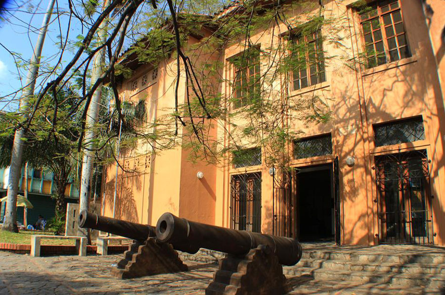

Museo de Antropología e Historia

Ubicado a solo unas calles del Parque Central, sobre la tercera avenida al
noroeste, ofrece al público exhibiciones que cuentan la historia de la ciudad,
desde la época precolombina hasta el presente. Se puede apreciar piezas
de alfarería, joyería, murales, elementos étnicos y armas; además de reliquias
de las primeras familias de San Pedro Sula. Temas como la conquista
española, el mestizaje cultural y racial, y la fundación y evolución económica
de la ciudad, se pueden ver plasmados en cada una de sus exposiciones.